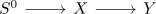
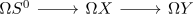
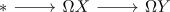
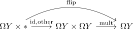

homology ring of the loop space for a fiber sequence with S^0
Proposition
Let

be a fiber sequence with $X$ simply connected and $\pi_1(Y) = \mathbb{Z}/2$
Then the homology ring of $\Omega Y$ is given by
together with the ring structure
Proof
consider the fiber sequence

and apply the loop space to obtain

but since $S^0$ has no higher homotopy groups, we get $\Omega S^0 = *$, i.e.

Now this shows that $\Omega X \rightarrow \Omega Y$ is the inclusion of a connected component.
But $\Omega Y$ is a cartesian group, so in particular all connected components are equivalent (cf. connected components of an anima valued group equivalent) and $\pi_0(\Omega Y) = \pi_0(S^0) = \mathbb{Z}/2 \mathbb{Z}$ (this is the only possible group structure) so there exist two components. Therefore
or
now we want to identify the ring structure:
Here we first use that the inclusion (of the fiber sequence) is a map of monoids, so
is a map of rings, hence
Furthermore the other component acts via flipping the components (since $\pi_1(-) , so we identify

Therefore $(0,1)$ acts from both sides by flipping.
Hence